Unofficial study solution; not an official GTU answer key. Answers have not been independently verified. English text reflows; source equations, diagrams and Gujarati retain their original appearance. Use Enlarge image to inspect them.
આ બિનસત્તાવાર અભ્યાસ ઉકેલ છે, સત્તાવાર GTU જવાબવહી નથી. PDF માંથી ગુજરાતી લખાણ સાચું નીકળતું નથી, તેથી દરેક જવાબ મૂળ ચિત્રરૂપે જાળવ્યો છે. વાંચવા માટે ચિત્ર મોટું કરો. મૂળ પ્રશ્ન અને પરીક્ષાના વિકલ્પોની સૂચનાઓ અનુસરો.
Coverage: All 14 MCQs and all three choices in each of the eight “attempt any two” sections are answered: 38 items. Follow the actual choice instructions in the exam.
Question wording: The authentic printed English is retained, with line breaks and mathematical typography normalised. The original question paper is a separate, unchanged PDF.
Assumptions and notes: Q1(7) uses 3000 only under a simplified transition convention; flow thresholds are not universal. Q4(A)3 assumes 101 °F because the printed unit is missing. Q3(B)3 is a Stokes-law estimate, with particle Re ≈ 0.49. Sabine’s formula uses metric open-window units.
Source and status: owner-supplied GTU question paper. These worked answers are study support, not an official GTU answer key.
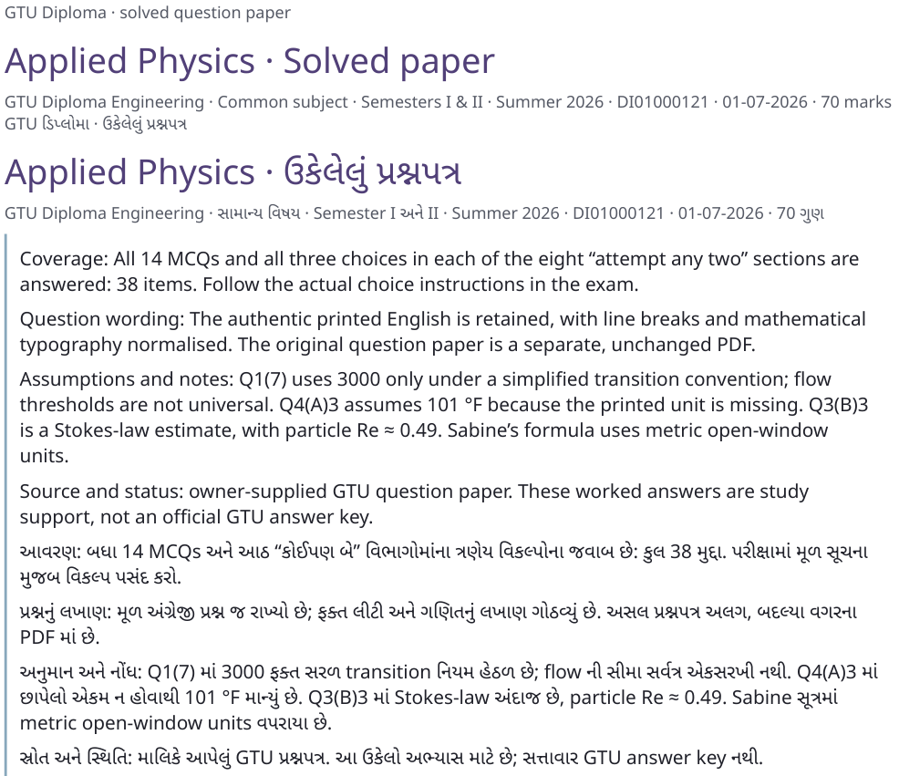
Question 1
Q1 · Multiple-choice and fill in the blanks
Q.1 (1) · ___________ is a vector physical quantity. (Velocity, Time,Mass) · 1 mark
Answer: Velocity: it has both magnitude and direction; time and mass are scalars.
Q.1 (2) · 1 Joule =_______ erg (10³,10⁵,10⁷) · 1 mark
Answer: 10⁷ erg. Since 1 N = 10⁵ dyne and 1 m = 10² cm, 1 J = 10⁷ dyne·cm = 10⁷ erg.
Q.1 (3) · In 0.0965, the number of significant digit are ____________ . (3,4,5) · 1 mark
Answer: 3: the leading zeros are not significant; 9, 6 and 5 are significant.
Q.1 (4) · The mathematical expression for centripetal force is ________. (mv/r, mv²/r, mv/r²) · 1 mark
Q.1 (5) · Acceleration produced by applying a force of 15 N to mass of 3 kg is _____ m/s². (5,15,45) · 1 mark
Q.1 (6) · __________ Unit of Surface Tension. (N/m ,N/m²,N²/m) · 1 mark
Answer: N·m⁻¹: surface tension is force per unit length along the interface.
Q.1 (7) · If Reynold’s Number k is greater than ____________ ,the flow of liquid is turbulent. (1000,2000,3000) · 1 mark
Answer: Exam-style choice: 3000, if the simplified convention uses 2000–3000 as the transition band. This is not a universal guarantee: for ordinary pipe flow a common conservative range is about 2300–4000 transitional and above about 4000 turbulent. The question omits the flow geometry and convention.
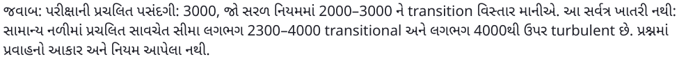
Q.1 (8) · The surface tension of liquid _________ with rise of temperature. (increases, decreases, remain constant) · 1 mark
Answer: Decreases, generally, as the temperature of a pure liquid rises.
Q.1 (9) · Fahrenheit and Celsius scales coinside at _________ . (0°, - 40°, 40°) · 1 mark
Q.1 (10) · _________ is unit of Heat Capacity. (cal/K, cal/kg, J/kg) · 1 mark
Answer: cal·K⁻¹. Heat capacity is energy per temperature change; its SI unit is J·K⁻¹.
Q.1 (11) · __________measures temperature without direct contact. (Mercury thermometer, Bimetallic thermometer, Pyrometer) · 1 mark
Answer: Pyrometer: it infers temperature from emitted thermal radiation without contact.
Q.1 (12) · ____________are non-mechanical waves. ( Sound waves, Water waves, Light waves) · 1 mark
Answer: Light waves: electromagnetic waves can travel in a vacuum.
Q.1 (13) · Sound waves having frequency more than 20,000 Hz is called _______. (Infrasonic,Ultrasonic, Supersonic) · 1 mark
Answer: Ultrasonic: frequency exceeds 20 kHz. Supersonic refers to speed, not frequency.
Q.1 (14) · SONAR = __________. (Sound Navigation and Random, Small Navigation and Random, Sound Navigation and Ranging) · 1 mark
Answer: Sound Navigation and Ranging: sound reflections help locate underwater objects.
Question 2
Q2 (A) · Measurement and impulse
Q.2 (A) 1 · Define : (a) Fundamental Physical Quantity (b) Accuracy (c) Precision · 3 marks
Fundamental physical quantity: a base quantity chosen independently of other quantities, such as length.
Accuracy: closeness of a measured value to the true or accepted value. Precision: closeness of repeated readings to one another.
Example: readings 9.9, 10.0, 10.1 cm for a 10.0 cm standard are both close to one another and close to the accepted value.
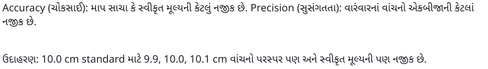
Q.2 (A) 2 · Explain types of errors. · 3 marks
Measurement error is the difference between a measured and a true or accepted value.
• Systematic error: a consistent bias, e.g. an instrument zero error or incorrect calibration; check and correct it.
• Random error: unpredictable variation in repeated observations, e.g. small reading fluctuations; repeat and average.
• Gross error: a mistake such as recording 12.6 as 21.6; prevent it by careful observation and recording.
Repeating readings alone does not remove a persistent systematic bias.
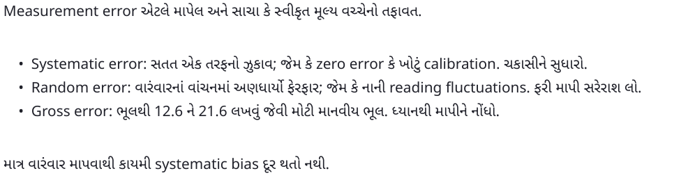
Q.2 (A) 3 · Explain Impulse of force and give its examples. · 3 marks
Impulse is the time integral of force. It equals the change in linear momentum; it is a vector in the direction of the momentum change.
J = ∫F dt = Δp = mv − mu; for constant force, J = FΔt.
Its SI unit is N·s, equivalent to kg·m·s⁻¹. For the same change of momentum, increasing stopping time reduces the average force.
Example: a player moves the hands backwards while catching a ball; the longer stopping time reduces the average impact force.
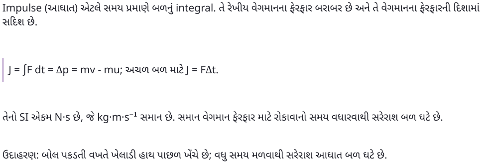
Q2 (B) · Vernier, circular force and error
Q.2 (B) 1 · Draw a neat sketch of Vernier calipers with labelling. · 4 marks
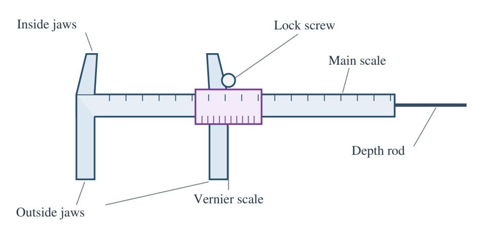
Labelled schematic: main scale, sliding vernier, inside and outside jaws, lock screw and depth rod.
The outside jaws measure an external diameter or thickness; the inside jaws measure an internal diameter. The depth rod measures the depth of a hole.
Move the sliding jaw gently against the object and lock it. Read the main scale just before the vernier zero; find the coinciding vernier line.
Reading = main-scale reading + coinciding division × least count − signed zero error.
Do not overtighten; check and correct the zero error before quoting a result.
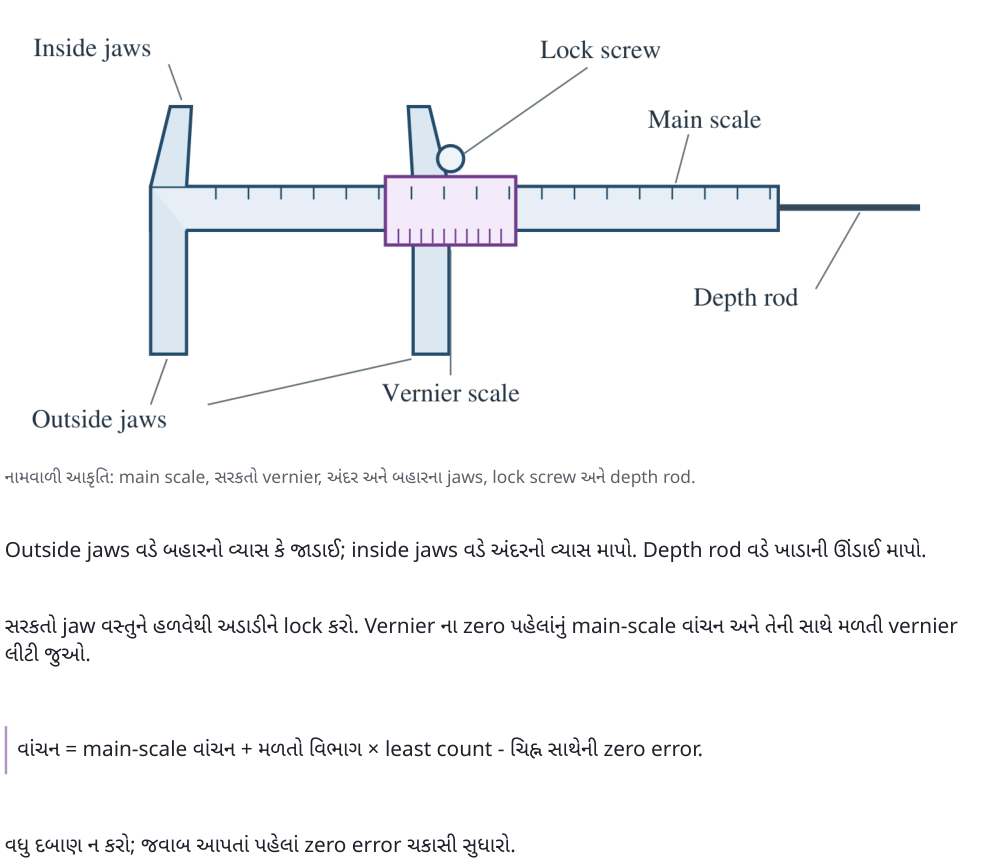
Q.2 (B) 2 · Explain Centripetal and Centrifugal force. · 4 marks
Centripetal force is the inward net real force required to turn a body along a circular path. Its
Centrifugal force is an apparent outward force introduced when describing the motion in a rotating frame. For uniform rotation its magnitude is mω²r; it is not an extra outward real force in an inertial frame.
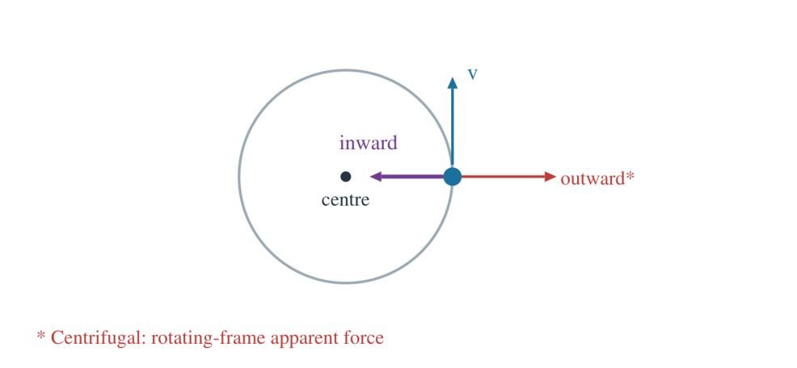
The net centripetal force points inward; the centrifugal force is apparent in a rotating frame.
Example: the string tension supplies the inward force for a whirled stone; a person rotating with it describes an apparent outward effect.
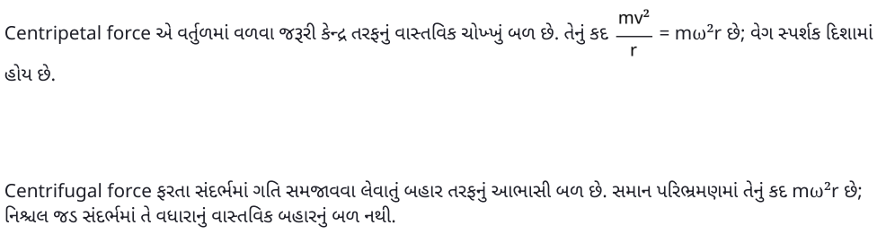
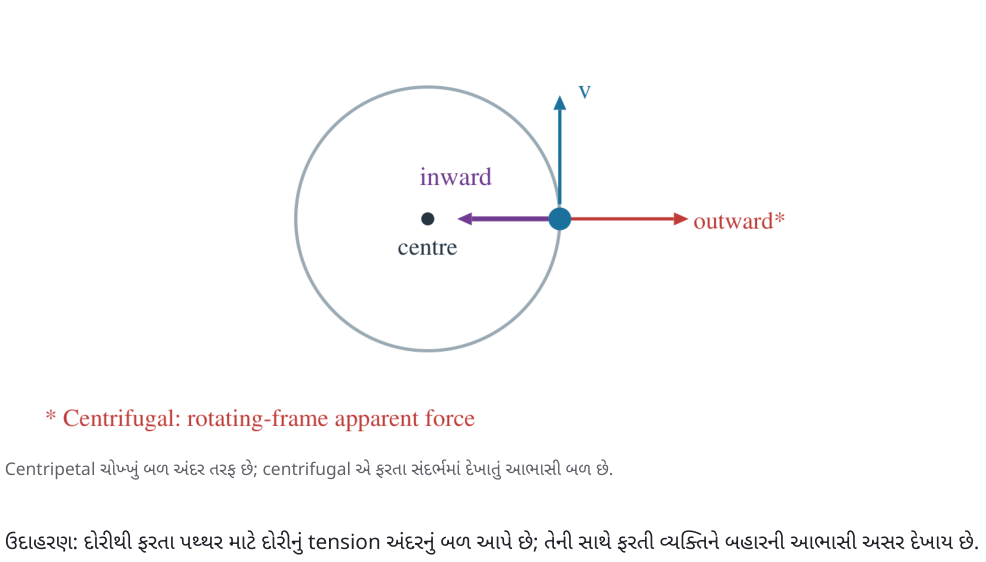
Q.2 (B) 3 · Calculate (i) absolute error (ii) mean absolute error (iii) relative error (iv) percentage error for observation given below. 102, 101, 99, 98, 103, 106, 97, 101, 98, 100 · 4 marks
Given and assumption
Observations: 102, 101, 99, 98, 103, 106, 97, 101, 98, 100.
n = 10; no true value or measurement unit is supplied. Use the mean as the best estimate.
Step-by-step solution
2. Absolute errors — |xᵢ − x̄ | in the printed order: 1.5, 0.5, 1.5, 2.5, 2.5, 5.5, 3.5, 0.5, 2.5, 0.5.
5. Percentage error — 0.0208955 × 100 = 2.08955%.
Absolute errors as listed; mean absolute error = 2.1, relative error ≈ 0.0209, percentage error ≈ 2.09%.
Check: the absolute deviations add to 21.0. Mean and absolute errors would have the measured unit if one had been specified; the relative and percentage errors are dimensionless.
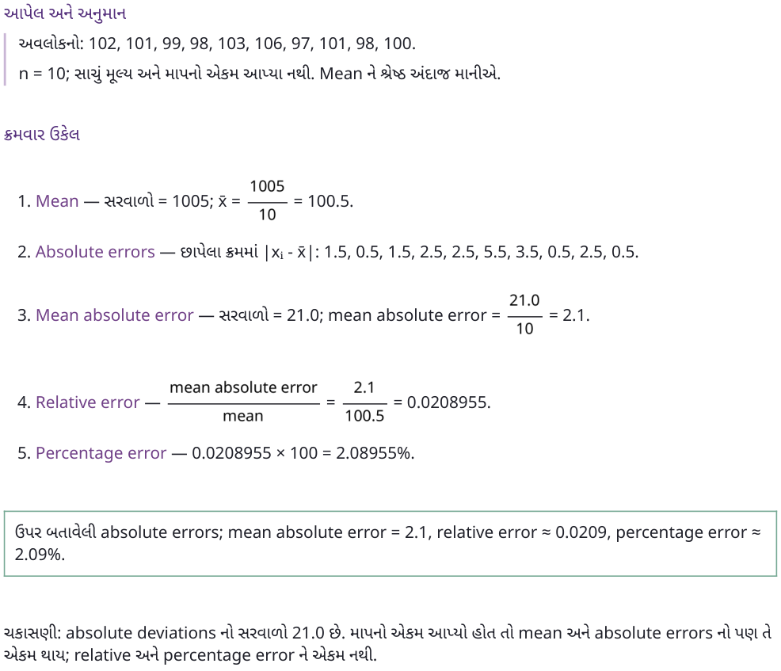
Question 3
Q3 (A) · Momentum, surface tension and terminal velocity
Q.3 (A) 1 · Explain law of conservation of momentum. · 3 marks
Law: If the net external force on a system is zero, its total linear momentum remains constant in magnitude and direction.
m₁u₁ + m₂u₂ = m₁v₁ + m₂v₂.
During a collision the internal forces are equal and opposite, so their impulses cancel. Momentum is conserved even when kinetic energy is not.
Example: a 2 kg trolley moving at 3 m·s⁻¹ sticks to a stationary 1 kg trolley. Then 2 × 3 = (2 + 1)v, so v = 2 m·s⁻¹, if external impulse is negligible.

Q.3 (A) 2 · Explain Laplace’s molecular theory of surface tension. · 3 marks
Laplace’s molecular theory: liquid molecules attract one another over a short molecular range. A molecule well inside is surrounded on all sides, so the attractions balance.
A surface molecule has fewer neighbours above it; the resultant molecular attraction is inward. Work is needed to bring molecules to the surface, so the surface has energy and tends to minimise its area.
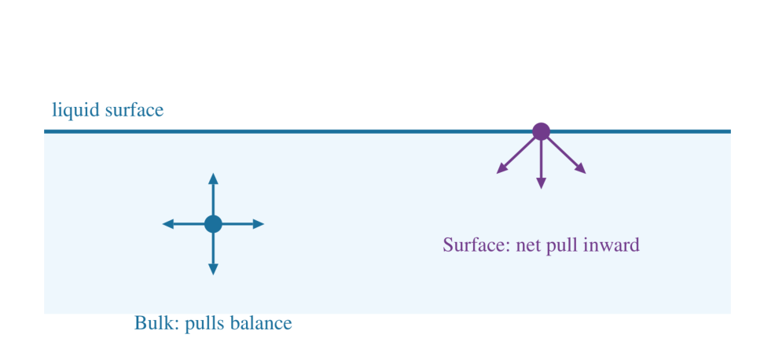
Molecular attractions cancel in the bulk but have an inward resultant at the surface.
Example: a small free liquid drop tends towards a spherical shape, which has minimum area for its volume.
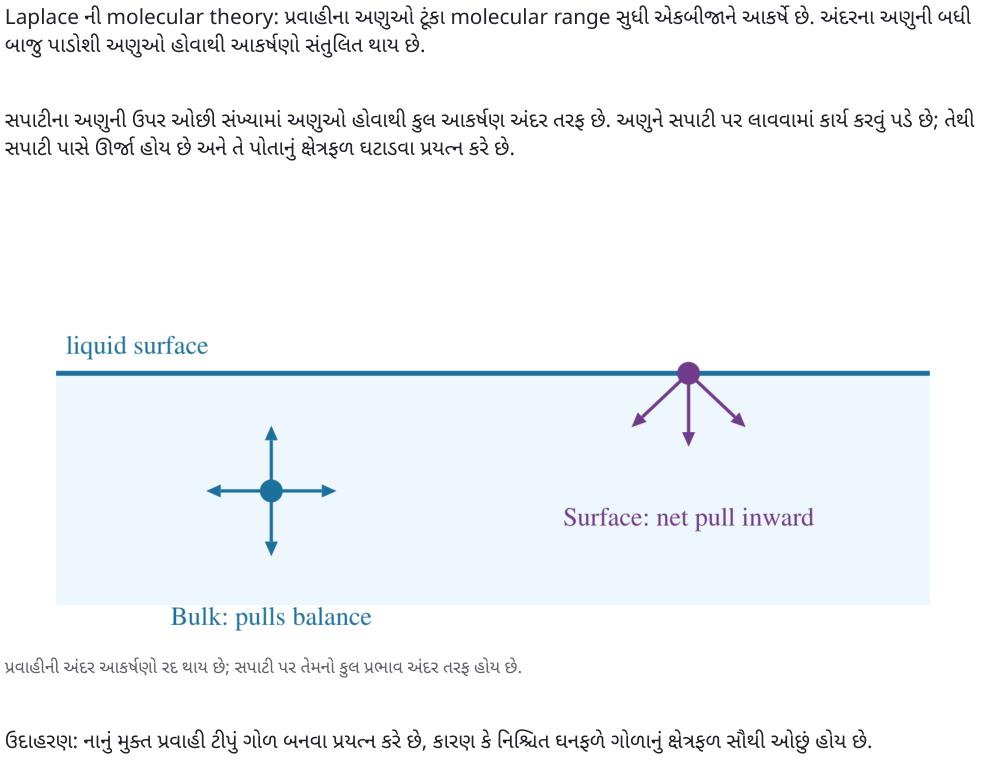
Q.3 (A) 3 · Explain Terminal velocity. · 3 marks
Terminal velocity is the constant velocity a body reaches while falling through a fluid when the net force becomes zero.
As a sphere falls, viscous drag grows with speed. At terminal speed W = buoyancy + drag, so
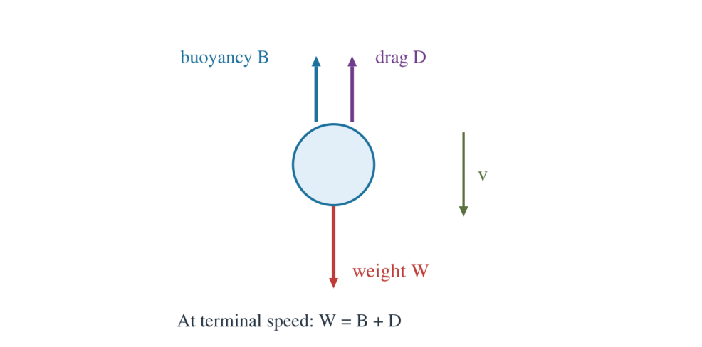
At terminal speed the upward drag and buoyancy balance the downward weight.
For example, a small metal sphere eventually settles at nearly constant speed in a sufficiently deep, viscous liquid.
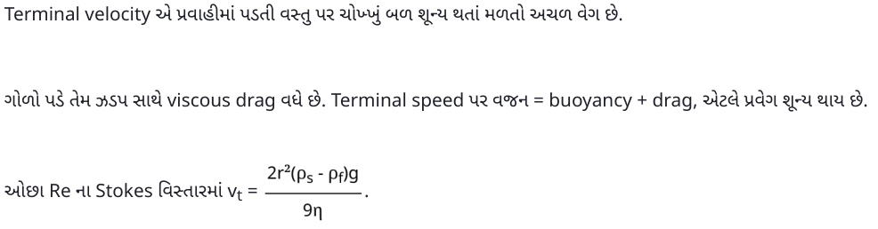
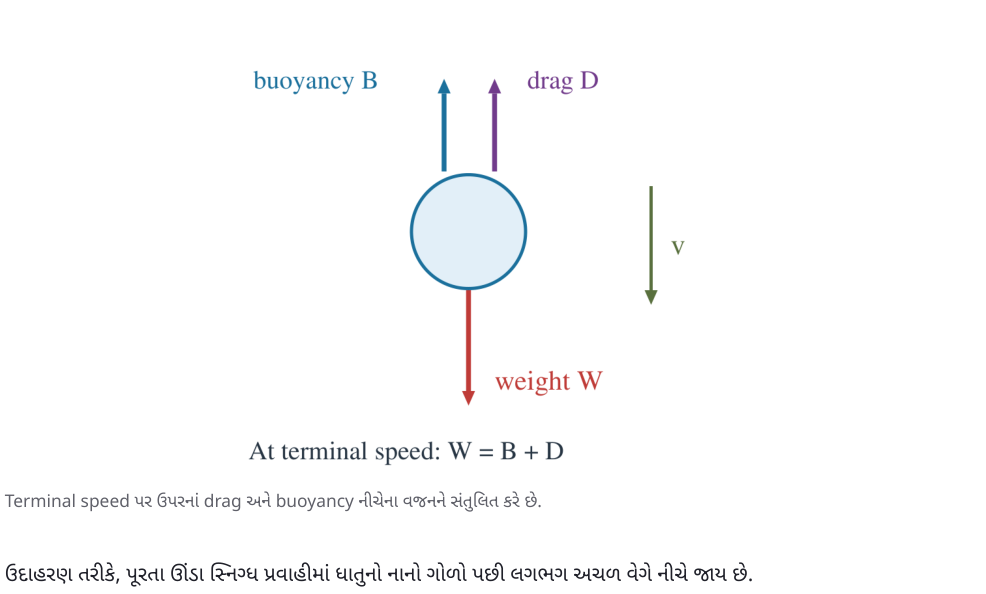
Q3 (B) · Matter and viscosity
Q.3 (B) 1 · Define : (a) Stress (b) Adhesive force (c) Deforming force (d) Surface tension · 4 marks
Adhesive force: attraction between molecules of different substances, e.g. water and glass.
Deforming force: an applied force that changes a body’s shape or size, e.g. a load stretching a wire.
Surface tension γ: tangential force per unit length across an imagined line on a liquid surface; unit N·m⁻¹. A free drop tends to become spherical.
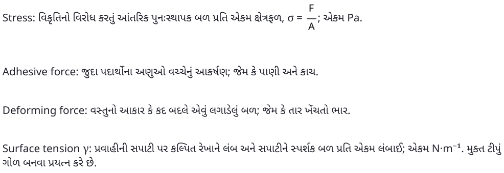
Q.3 (B) 2 · Explain stress-strain curve in detail. · 4 marks
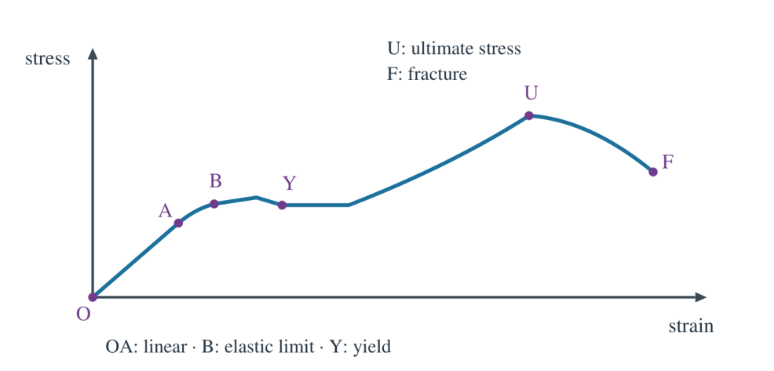
Schematic engineering stress–strain curve for a ductile metal; not to scale.
• O–A: straight proportional region; Hooke’s law applies and slope is Young’s modulus Y.
• A: proportional limit. Up to the elastic limit B the specimen returns to its original length when unloaded; A and B need not coincide.
• Beyond B, permanent plastic strain remains. Near Y, yielding gives a large increase in strain with little change in stress.
• After strain hardening the engineering stress reaches its maximum U (ultimate tensile stress). Necking then reduces the engineering stress until fracture F.
The exact shape and yield plateau depend on the material. Do not apply Hooke’s law to the plastic region.
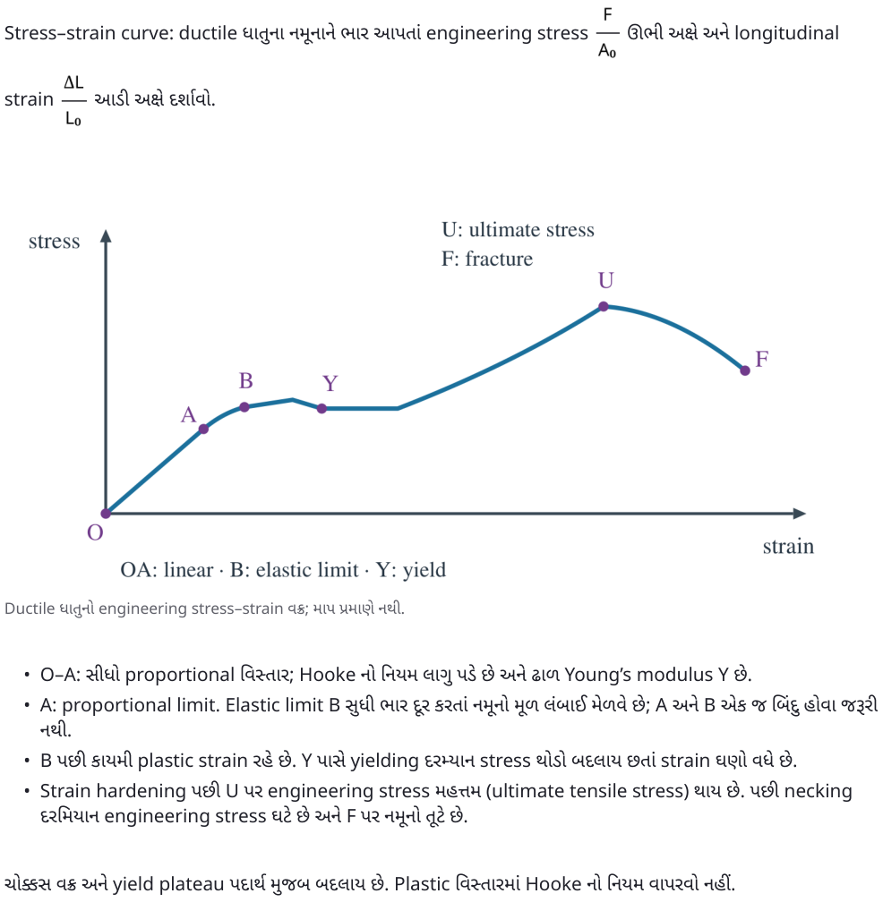
Q.3 (B) 3 · A metal sphere with a radius of 2 mm and density of 10.5 gm/cm³ falls freely into glycerine having density 1.5 gm/cm³ and coefficient of viscosity 9.8 poise. Find the terminal velocity of the sphere. · 4 marks
Given and assumption
r = 2 mm = 0.002 m.
ρs = 10.5 g·cm⁻³ = 10500 kg·m⁻³.
ρf = 1.5 g·cm⁻³ = 1500 kg·m⁻³.
η = 9.8 poise = 0.98 Pa·s (1 poise = 0.1 Pa·s).
Take g = 9.8 m·s⁻²; assume an isolated sphere in a Newtonian liquid.
Step-by-step solution
2. Density difference — ρs − ρf = 10500 − 1500 = 9000 kg·m⁻³.
Stokes-law estimate: vt ≈ 0.080 m·s⁻¹ downward.
This is not much less than 1, so Stokes’ very-low-Re approximation may have a noticeable finite-Re correction; the result is an estimate, not an exact speed.
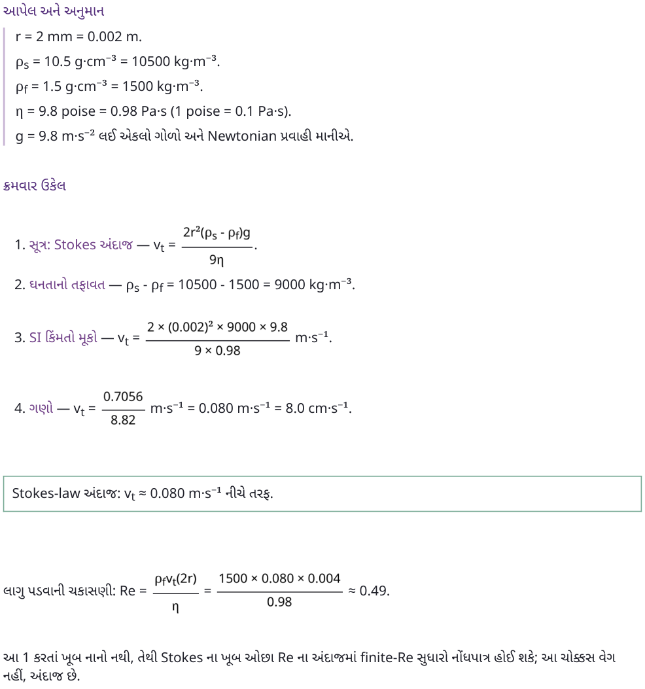
Question 4
Q4 (A) · Heat transfer, Reynolds number and scales
Q.4 (A) 1 · Explain the mode of heat transfer. · 3 marks
Heat transfer is energy transfer due to a temperature difference, from higher to lower temperature.
• Conduction: energy passes by microscopic interactions without bulk transport of the material; e.g. a hot metal spoon.
• Convection: energy is carried by bulk motion of a fluid; e.g. water circulating while heated.
• Radiation: energy travels as electromagnetic waves and needs no medium; e.g. sunlight crossing space.
Conduction also occurs in fluids; convection requires a fluid, while radiation can travel through vacuum.
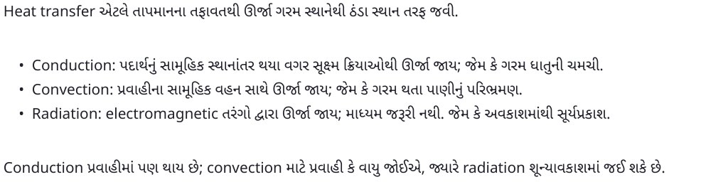
Q.4 (A) 2 · Write a short note on Reynold’s number. · 3 marks
Reynolds number is a dimensionless ratio of inertial to viscous effects in a flow.
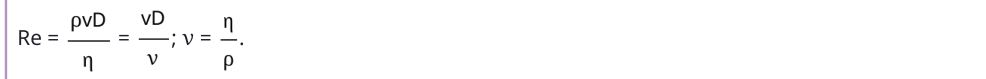
Here ρ is fluid density, v mean speed, D pipe diameter, η dynamic viscosity and ν kinematic viscosity. It helps compare similar flows and estimate their regime.
For ordinary pipe flow, roughly Re below 2300 is laminar, 2300–4000 is transitional, and above 4000 is usually turbulent; geometry and disturbances affect transition. Some exam conventions use 2000–3000 as the transition band.
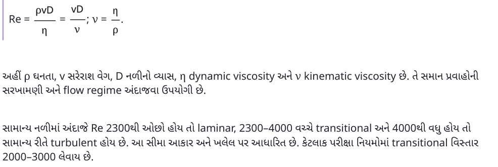
Q.4 (A) 3 · A person has fever 101. Which temperature scale is used here? Convert this temperature into other two units. · 3 marks
Given and assumption
The printed “fever 101” has no scale. Assume 101 °F: this is the most plausible ordinary clinical interpretation, not a stated unit.
Step-by-step solution
3. Convert to kelvin — K = 38.333… + 273.15 = 311.483… K.
Assuming 101 °F: approximately 38.33 °C and 311.48 K.
Check: 38.33 °C is above typical normal body temperature. Without the Fahrenheit assumption there is no unique conversion from the printed number.
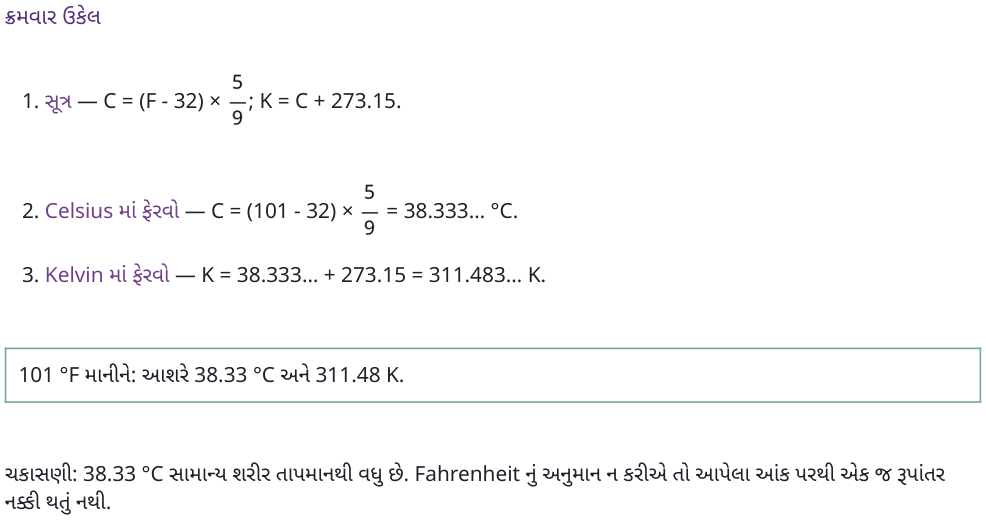
Q4 (B) · Conductivity, thermometry and capillarity
Q.4 (B) 1 · Describe the applications of Thermal conductivity. · 4 marks
Thermal conductivity k measures a material’s ability to conduct heat. For steady one-dimensional
• Cooking vessels and heat exchangers: high-k aluminium or copper transfers heat quickly.
• Heat sinks and electronic equipment: a high-k metal carries heat away from components.
• Buildings, refrigerators and furnaces: low-k insulation such as mineral wool reduces heat loss or gain.
• Pan handles: low-k materials reduce heat flow to the hand.
Actual heat transfer also depends on thickness, contact, convection and radiation; k alone does not determine it.
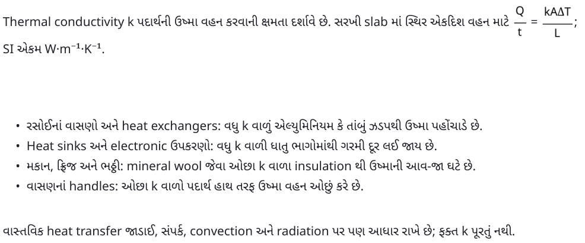
Q.4 (B) 2 · Write a short note on mercury thermometer. · 4 marks
Mercury thermometer uses thermal expansion of mercury to indicate temperature.
• Construction: mercury-filled bulb connected to a fine sealed glass capillary with a calibrated scale.
• Working: when the bulb warms, mercury expands and its column rises; read the column against the scale after thermal equilibrium.
• Use: a suitably calibrated instrument measures temperature within its marked range. Mercury does not wet glass and has a clearly visible column.
Limitation: mercury is toxic if the instrument breaks; follow local disposal and safety rules and prefer a suitable mercury-free instrument where available. Mercury freezes near −39 °C.
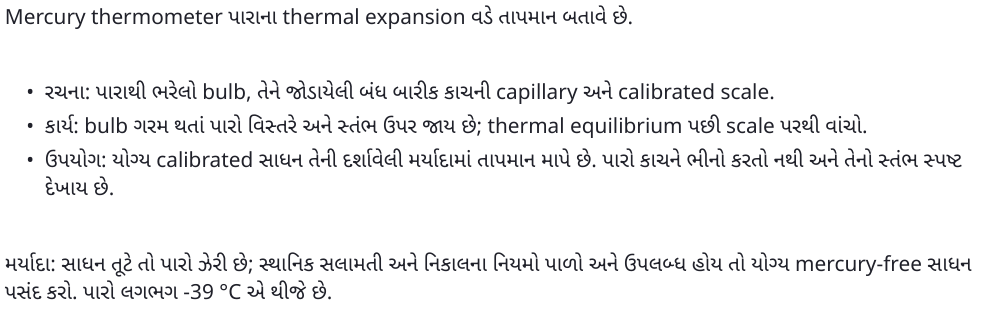
Q.4 (B) 3 · What will be the height in a capillary tube of 1 mm diameter dipped vertically in a beaker with water filled? ( The surface tension of water is 7×10⁻² N/m, the density of water is 10³ kg/m³ and the angle of contact of water 0° and g = 9.8 m/s² ) · 4 marks
Given and assumption
Diameter d = 1 mm = 1.0 × 10⁻³ m; radius r = 0.5 mm = 5.0 × 10⁻⁴ m.
Surface tension γ = 7 × 10⁻² N·m⁻¹; density ρ = 10³ kg·m⁻³.
θ = 0°; g = 9.8 m·s⁻².
Assume a uniform tube and ideal capillary rise; neglect the meniscus-volume correction.
Step-by-step solution
2. Contact angle — cos 0° = 1.
Water rises approximately 2.86 cm above the surrounding level.
Check: a zero contact angle gives a positive rise in a clean, wetting tube.
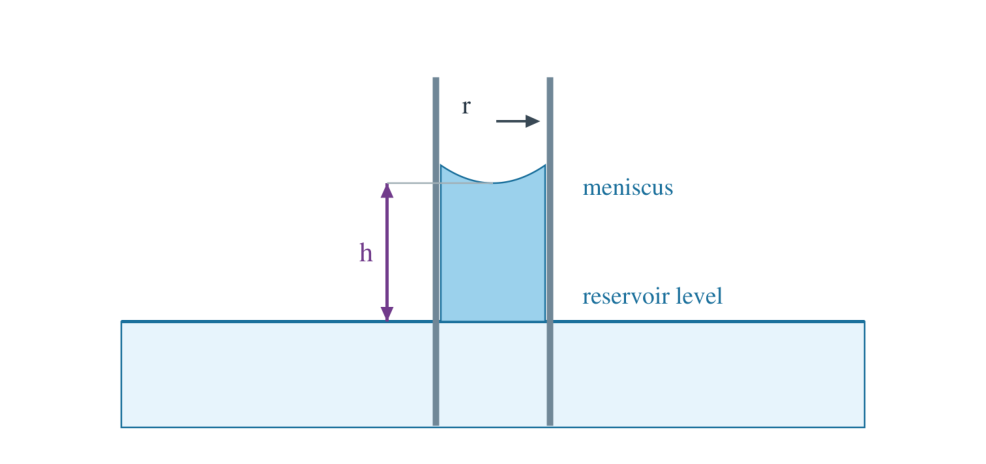
The height is measured from the reservoir level; the tube diameter is 2r.
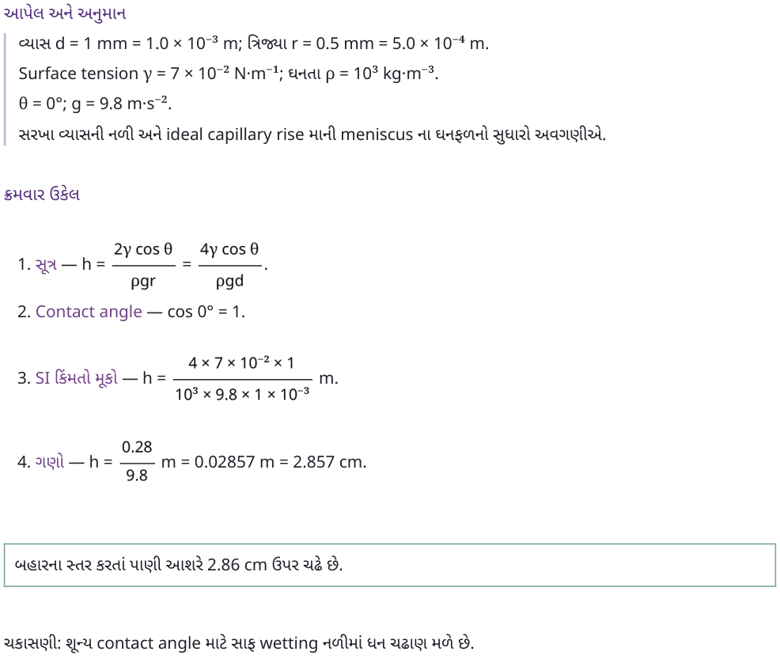
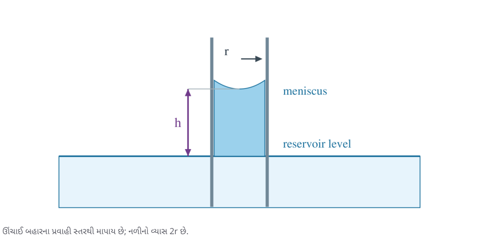
Question 5
Q5 (A) · Waves and interference
Q.5 (A) 1 · Define : (a) Mechanical wave (b) Frequency (c) Periodic time · 3 marks
Mechanical wave: a travelling disturbance that transfers energy through a material medium, e.g. sound in air.
Frequency f: number of complete oscillations per second at a point; SI unit hertz (Hz). Periodic time T: time for one complete oscillation; SI unit second (s).
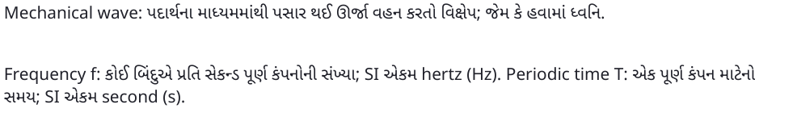
Q.5 (A) 2 · Explain interference of light. · 3 marks
Interference of light is the redistribution of intensity when coherent light waves overlap and superpose.
• Constructive interference: waves arrive in phase and produce a bright fringe; for initially in- phase sources, path difference Δ = nλ.
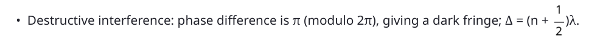
• A stable pattern needs coherent sources with a constant phase difference and suitable polarisation.
Example: Young’s double-slit arrangement produces alternating bright and dark fringes. Unequal wave intensities make minima less completely dark.
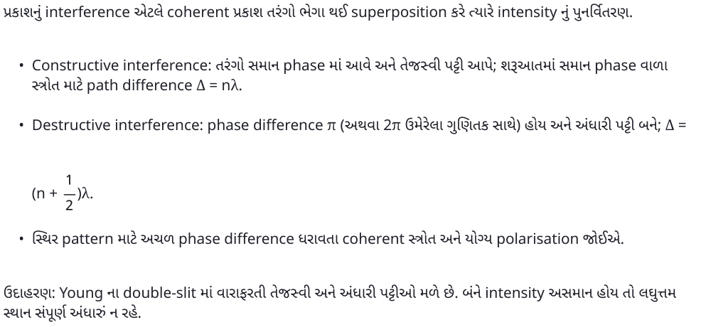
Q.5 (A) 3 · State the relation between velocity, wavelength and frequency and for frequency f = 512 Hz and velocity v = 330 m/s find wavelength. · 3 marks
Given
Frequency f = 512 Hz.
Speed v = 330 m·s⁻¹.
Step-by-step solution
Wavelength λ ≈ 0.645 m (64.45 cm).
Check: wavelength is positive and has the unit of length.
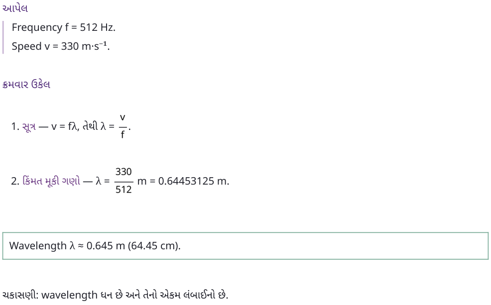
Q5 (B) · Wave types, ultrasound and acoustics
Q.5 (B) 1 · Differentiate between Transverse and longitudinal waves. · 4 marks

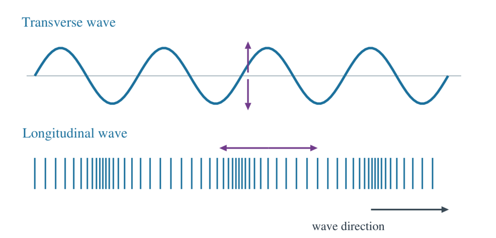
The purple arrows show vibration; the bottom arrow shows propagation.
Mechanical waves need a medium; electromagnetic light does not. In solids, mechanical waves can be transverse or longitudinal, whereas a bulk fluid does not sustain a shear wave.
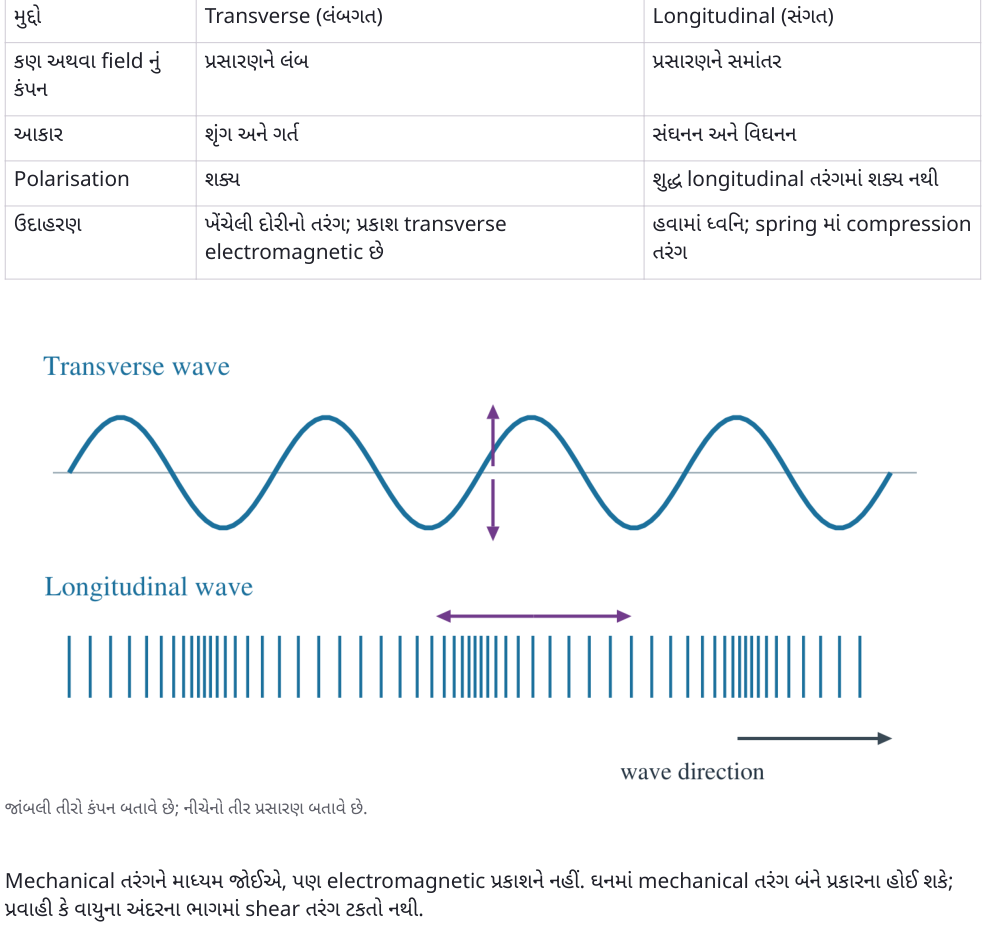
Q.5 (B) 2 · Write applications of Ultrasonic waves in various fields. · 4 marks
Ultrasonic waves are sound waves with frequency above 20 kHz. Applications include:
• Medicine: diagnostic ultrasonography and echocardiography.
• Industry: non-destructive detection of internal cracks and thickness measurement.
• Marine: SONAR for underwater ranging and depth measurement.
• Cleaning: cavitation removes dirt from small machine or jewellery parts.
• Manufacturing: ultrasonic welding, machining and drilling of suitable materials.
• Measurement: distance sensors and flow measurement in suitable media.
Use the correct frequency and coupling medium: ultrasound is strongly attenuated in air and does not propagate through vacuum.
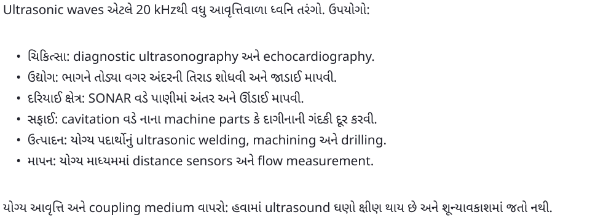
Q.5 (B) 3 · Define Reverberation time and find it for the size of an auditorium of 8000 m³ and total sound absorption of 2500 O.W.U. · 4 marks
Reverberation time T₆₀ is the 60 dB sound-level decay time after the source stops, for a diffuse room.
Given and assumption
Volume V = 8000 m³; total absorption A = 2500 O.W.U.
Assume one metric O.W.U. = 1 m² of perfectly absorbing open window, or 1 m² sabin.
Step-by-step solution
T₆₀ ≈ 0.515 s.
Check: time is positive. Sabine assumes a diffuse field and moderate absorption.
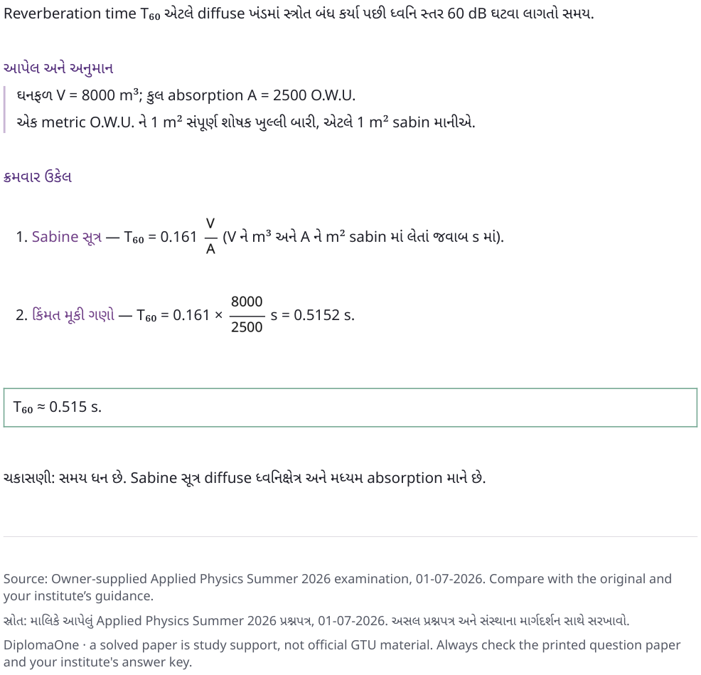